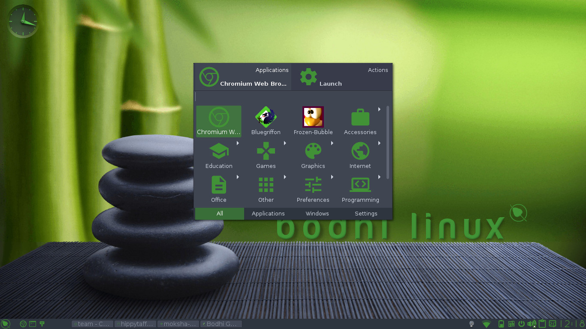

The Bodhi Guide to Moksha
Quick Launcher
Quick Launcher started it’s life as an E17 module called ‘everything’ Since then it has been tweaked and improved, but the initial idea of being able to find literally everything using a fully-indexed database of all the applications and files on your PC remains.
Other operating systems have similar features. Windows has "Desktop Search", Mac OS X has "Spotlight" Other Window Managers and Desktop Environments have similar tools. What sets Quick Launcher apart is its plugin architecture that allows it to go beyond simply finding applications and files.
How to Run Everything
Quick Launcher is quite sophisticated. Not only because of what it can do, but how easily you can do it. The default method of opening Quick Laucnher is to press Alt+Esc. Then simply start typing what you want to do. As you type, Quick Launcher will start showing suggestions of what it thinks you want to do. When you see what you want, you can select it and press Enter or double-click it. If you change your mind and want to exit Quick Launcher, simply press Esc or click somewhere outside the Quick Launcher window.
By default, Bodhi Linux also provides Win+Space as a shortcut to Everything and you can also access it from Main Menu -> Quick Launcher.

Quick
Launcher also
adapts to your computing habits. Every time you use it keeps track
of what you do most frequently. Over time your more commonly used
files, applications, etc. appear with fewer keystrokes. For example,
when you first use Quick
Launcher and
simply enter the letter L , you will see several applications in some order
such as Leafpad, Libreoffice, Libremath, and so on. Now suppose you kept going and typed Livepatch, and launched it. After doing this a few times, you
will only have to type L and Livepatch will show first.
It Doesn’t Stop There
Suppose you have
a custom bash script called myscript.sh , and you want to edit it. You fire up Quick
Launcher and
type myscript.sh . Now when you select it, how is Quick
Launcher supposed
to know whether you want to edit it or run it?
If you look at the top of the Quick Launcher window, you will see two tabs. The first one is the default view that lists the possible matches to your query. The second one is contextual and can change depending on what is selected. It typically shows the various Actions you can perform with the selected item.
Back to our myscript.sh
example, if you click on the second tab, you will see a list of
possible things you can do with your script such as Open with... or
Copy to...
It might also list a text editor like Leafpad and an option to Run
in Terminal. Choose Leafpad and your
script will open for editing.
The icing on the
cake is that just as Quick
Launcher keeps
track of what you select most frequently, it also remembers what you
do with them most frequently. So next time, you type myscript.sh
into Quick
Launcher the
first Action
it chooses will likely be to open it in Leafpad.
Plugins
As mentioned before, one of Quick Launcher’s most powerful features is its plugin architecture. Everything you see in it is the result of some plugin. The more commonly used and understood ones are Applications, Files, and Recent Files. If you open Everything Settings at Main Menu -> Settings -> Settings Panel -> Launcher -> Everything Configuration, and choose the Plugins tab, you will see that there are three types of plugins: Subject, Action, and Object.

These are organized the same as the tabs you see at the top of the Quick Launcher window. The first tab shows the results from the applicable Subject plugins. The second tab shows any applicable Action plugins, things you can do with the selected Subject. If needed, there will be a third tab that shows the applicable Object plugins, to perform the selected Action on. (For example, if you select the Copy To... Action, it needs to know where to copy to.) The smaller text in the upper right corner of each tab shows what plugin is generating the current result.
Along the bottom of the Quick Launcher window you can see more tabs showing the available plugins for each type: Subject, Action, or Object. They are also contextual based on what is currently selected. By default, every option from every plugin is shown. The tabs listed at the bottom allow you to filter the choices by plugin.Some Default plugins
Plugin |
Description |
|
Applications |
As mentioned before, one of the most commonly used and understood plugins is the Applications plugin. This plugin is what allows Everything to launch an application. |
|
Files/Recent Files |
Also commonly used plugins that lets Everything find files and browse the directories on your filesystem. |
|
Windows |
Plugin which allows you to manipulate open windows. |
|
Settings |
Plugin to find various settings dialogs. |
|
Exebuf |
Plugin to run CLI commands. |
|
Text |
Simple plugin to copy snippets of text to the clipboard. |
|
Plugins |
A plugin to access plugins! |
As an application launcher
In the screenshot above, the user has "raised" Everything by entering the key binding (keyboard shortcut) Alt+Esc or Win+Space. Next, the user entered "E". Just entering "E" causes Quick Launcher to search its history-sorted database for the most frequently-used applications starting with that letter. It finds several, the first nine of which are displayed with their icons in a grid. But, if the user follows the "E" with a "v", so the command line at the upper left contains "Ev" - the scope of possibilities reduces, so the most probable intended application becomes "Everything Configuration", which is highlighted. Once an application is highlighted, it can be launched simply by double-clicking the icon or by pressing the Return key. Try it!
Beyond Everything
The above plugins are the standard ones that come with Everything. You can install additional plugins to enhance the functionality of Everything. Below are a few examples.
Calculator
The calculator
plugin allows Quick
Launcher to
perform the basic functions of a calculator. You will likely see the
plugin is already installed. Press = to trigger the calculator plugin. Type =1+2 and you
will see 3
listed in the Subject tab.
Keyboard Navigation
While you can use your mouse to navigate through Quick Launcher, it was designed with the keyboard jockey in mind. Here are the basics.
Keys |
Action |
|
Tab |
Cycle through top tabs (Subject, Action, Object) |
|
up/down/left/right |
Move through possible choices |
|
Enter |
Select item/action |
|
Ctrl+left/right |
Move through bottom tabs (plugin filters) |
If reaching for the arrow keys is appalling to you, there are two options, Vi based (default) and Emacs based, which can be set in Everything Settings for faster navigation.
Vi |
Emacs |
Action |
|
Alt+h |
Alt+b |
Move left |
|
Alt+j |
Alt+n |
Move down |
|
Alt+k |
Alt+p |
Move up |
|
Alt+l |
Alt+f |
Move right |
|
Alt+i |
Alt+i |
Cycle through top tabs (Subject, Action, Object) |
|
Alt+Shift+n |
Alt+Shift+f |
Next plugin filter |
|
Alt+Shift+p |
Alt+Shift+b |
Previous plugin filter |
|
Prev: |
Contents: |
Next: |